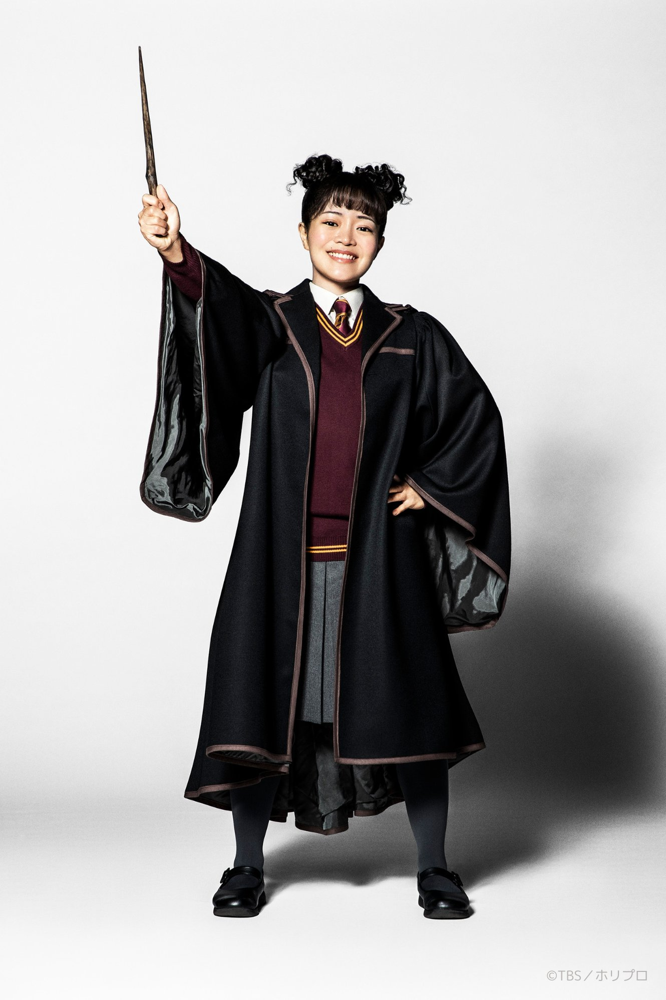
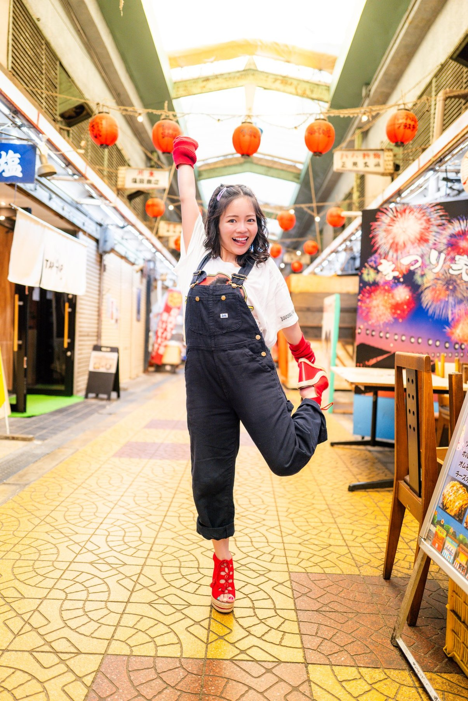
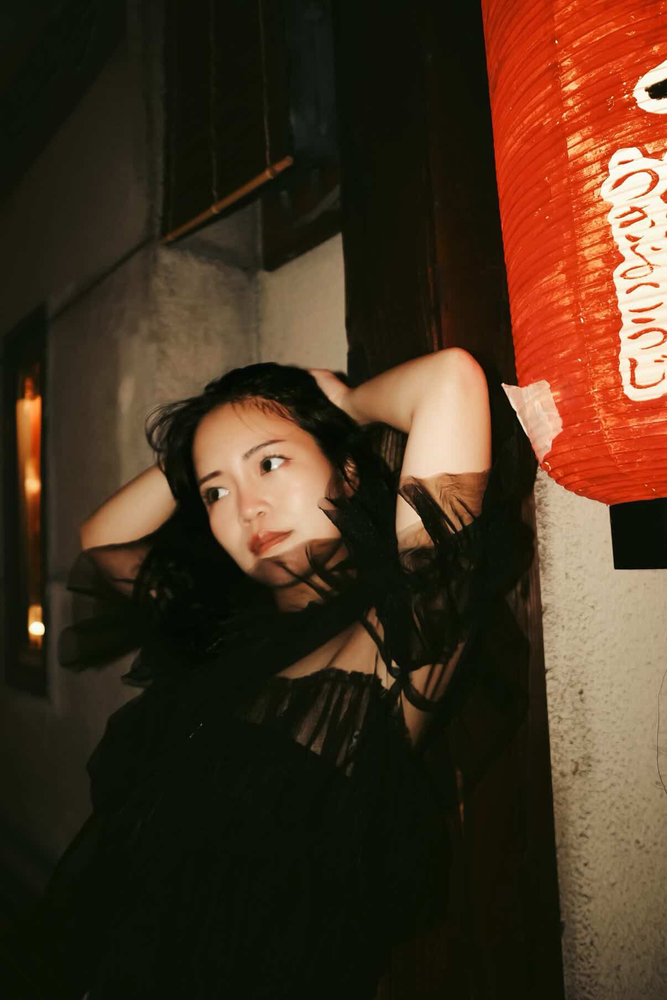

大阪府大東市出身。劇団青年座所属。ハリー・ポッターと呪いの子（日本版）オリジナルキャストとして、TBS赤坂ACTシアターで2年間・647公演にわたりローズ・グレンジャー・ウィーズリー役を演じた。
2024年、文化庁新進芸術家海外研修制度の奨学生に採択され、ニューヨークのHB Studioにて1年間の集中研修を修了。資金調達のために令和の虎にも出演。特技はアクロバット、英語、大阪弁、似顔絵、フルマラソンなど。
Natsumi Hashimoto is a Japanese actress based in Tokyo and Osaka, affiliated with Seinenza Theatre Company.
She originated the role of Rose Granger-Weasley in the Japanese premiere of Harry Potter and the Cursed Child, performing 647 shows over two years at TBS Akasaka ACT Theater (Horipro / TBS / ATG).
In 2024, she was awarded the Japan Agency for Cultural Affairs Overseas Study Program for Upcoming Artists, one of Japan's most prestigious arts fellowships, and completed one year of intensive actor training at HB Studio, New York.
Her performance skills include acrobatics, stage combat, and marathon running. Performs in both Japanese and English; native speaker of the Osaka dialect.
| 年 | 主催・作品名 | 役名 | 劇場 | 演出 | Year | Production / Title | Role | Venue | Director |
|---|---|---|---|---|---|---|---|---|---|
| 22–24 | ホリプロ・TBS・ATGハリー・ポッターと呪いの子 Horipro / TBS / ATGHarry Potter and the Cursed Child | ローズ・グレンジャー・ウィーズリー | Rose Granger-Weasley | TBS赤坂ACTシアター | TBS Akasaka ACT Theater, Tokyo | 演出：ジョン・ティファニー | Dir. John Tiffany | ||
| 2025 | HBスタジオ ショーケースIn grish HB Studio ShowcaseIn grish | Natsumi | Natsumi | Hellen Gallagar Theater, New York | 作・演出：橋本菜摘 | Written & Dir. Natsumi Hashimoto | |||
| 2024 | Karent.朗読劇 10年後の君へ Karent.10 Years Later, to You (Reading Theatre) | 高橋彩 | Aya Takahashi | アトリエファンファーレ高円寺 他 | Atelier Fanfare Koenji, Tokyo + Tour | 作・演出：岩田華怜 | Written & Dir. Karen Iwata | ||
| 2024 | かわいいコンビニ店員飯田さん空腹 Kawaii Convenience Store Clerk Iida-sanKuhuku (Hunger) | 倉下幸 | Sachi Kurashita | OFF･OFFシアター | OFF･OFF Theatre, Tokyo | 作・演出：池内風 | Written & Dir. Fuu Ikeuchi | ||
| 2024 | ENGmissing〜ドラゴンズ・バックへの歩調〜 ENGmissing – Steps Toward the Dragons' Back | 江東梨央奈 | Erina Koto | 六行会ホール | Rikkokai Hall, Tokyo | 作・演出：福地慎太郎 | Written & Dir. Shintarou Fukuchi | ||
| 2022 | DMM炎炎ノ消防隊（第2弾） DMMFire Force Stage Play (2nd) | ヒナタ | Hinata | KT Zepp Yokohama, Kanagawa | 演出：久保田唱 | Dir. Sho Kubota | |||
| 2020 | PARCOMODERN BOYS PARCOMODERN BOYS | カナ | Kana | 新国立劇場 中劇場 | New National Theatre Playhouse, Tokyo | 演出：一色隆司 | Dir. Takashi Isshiki | ||
| 2020 | 青年座横濱短篇ホテル Seinenza Theatre CompanyYokohama Tanpen Hotel | カオリ | Kaori | 中部・北陸地方演劇鑑賞会ツアー | Chubu–Hokuriku Regional Theatre Tour | 演出：宮田慶子 | Dir. Keiko Miyata | ||
| 2020 | 青年座ブルーストッキングの女たち Seinenza Theatre CompanyBluestocking no Onna Tachi | 魔子、女中、一 | Mako, Made, Makoto | 東京芸術劇場シアターウエスト | Tokyo Metropolitan Theatre West, Tokyo | 演出：齋藤理恵子 | Dir. Rieko Saito | ||
| 2020 | 青年座ありがとサンキュー！ Seinenza Theatre CompanyArigato Thank you! | 坂田美穂 | Miho Sakata | BIG TREE THEATER, Tokyo | 演出：磯村純 | Dir. Jun Isomura | |||
| 2020 | DMM炎炎ノ消防隊（初演） DMMFire Force Stage Play (1st) | アンサンブル | Ensemble | KT Zepp Yokohama、梅田芸術劇場シアタードラマシティ | KT Zepp Yokohama + Umeda Arts Theatre Drama City, Osaka | 演出：久保田唱 | Dir. Sho Kubota | ||
| 2019 | ホリプロ奇跡の人 HoriproThe Miracle Worker | マーサ | Martha | 東京芸術劇場プレイハウス、梅田芸術劇場シアタードラマシティ 他 | Tokyo Metropolitan Theatre, Tokyo + Umeda Arts Theater Drama City, Osaka + Tour | 演出：森新太郎 | Dir. Shintaro Mori | ||
| 2019 | 春雪Chunxue (Spring Snow) | ヤオ・モンチー | Yao Mengqi | シアター風姿花伝 | Theatre Fuushikaden, Tokyo | 演出：山口篤 | Dir. Atsushi Yamaguchi | ||
| 2018 | 青年座安楽病棟 Seinenza Theatre CompanyAnraku Byoto | 理恵 | Rie | 本多劇場 | Honda Theater, Tokyo | 演出：磯村純 | Dir. Jun Isomura | ||
| 2018 | 国東演劇講座遥かなる海の讃美歌 Kunisaki Drama WorkshopHymn of the Distant Sea | ジョアン岐部 | Joan Kibe | くにさきアストホール | Kunisaki Ast Hall, Oita | 演出：磯村純 | Dir. Jun Isomura | ||
| 2017 | 青年座ブンナよ、木からおりてこい Seinenza Theatre CompanyBunna, Come Down from the Tree | 子ガエルB | Baby Frog B | 新国立劇場小劇場、中国地方演劇鑑賞会ツアー | New National Theatre The Pit, Tokyo + Chugoku Region Theatre Tour | 演出：磯村純 | Dir. Jun Isomura | ||
| 2017 | 青年座研究所明日 ——長崎・1945年8月9日—— Seinenza TheaterTomorrow — Nagasaki, August 9, 1945 | ツル子 | Tsuruko | 青年座研究所 卒業公演 | Seinenza Theater, Tokyo | 演出：須藤黄英 | Dir. Kie Sudo | ||
| 2016 | 青年座研究所わが町 Seinenza TheaterOur Town | エミリー | Emily | 青年座研究所 研修公演 | Seinenza Theater, Tokyo | 演出：須藤黄英 | Dir. Kie Sudo | ||
| 2016 | 青年座研究所月の岬 Seinenza TheaterThe Cape of the Moon | 大浦和美 | Kazumi Oura | 青年座研究所 研修公演 | Seinenza Theater, Tokyo | 演出：齋藤理恵子 | Dir. Rieko Saito | ||
| 2016 | 青年座研究所第三の証言 Seinenza TheaterThe Third Testimony | 行田敏子 | Toshiko Gyoda | 青年座研究所 研修公演 | Seinenza Theater, Tokyo | 演出：黒岩亮 | Dir. Makoto Kuroiwa | ||
| 2014 | チョコレイト旅団宇宙の旅、セミが鳴いて Chocolate RyodanThe Journey Through Space, While the Cicadas Cry | 荒川雪恵 | Yukie Arakawa | 中野MOMO | Nakano Theatre MOMO, Tokyo | 演出：浮谷泰史 | Dir. Taishi Ukiya | ||
| 2013 | 専門学校卒業公演僕の東京日記 Vocational School Graduation ProductionMy Tokyo Diary | 土橋郁代 | Ikuyo Dobashi | ビジュアルアーツ大阪 | Visual Arts College, Osaka | 演出：谷広子 | Dir. Hiroko Tani |
| テレビTelevision | |||||||
| 2021 | 理想的本箱Ideal Bookcase | 馬堀 | Umahori | NHK Eテレ | NHK E-Tele | ||
| 2020 | ら〜めん西遊記Ramen Saiyuki | 料理教室の生徒 | Cooking School Student | テレビ東京 | TV Tokyo | ||
| 2019 | モンローが死んだ日The Day Monroe Died | 劇団員 | Theatre Company Member | NHK BSプレミアム | NHK BS Premium | ||
| 映画Film | |||||||
| 2021 | Muddy date（短編映画）Muddy date (Short Film) | ひろみ | Hiromi | 監督：丸山智 | Dir. Satoshi Maruyama | ||
| 配信演劇Streaming Theatre | |||||||
| 2021 | 初恋は消耗品First Love is Disposable | 優菜 | Yuna | 配信 | Streaming | ||
| 2021 | あたしら葉桜Atashira Hazakura | 娘 | Daughter | 配信 | Streaming | ||
| 2020 | Mio PardreMio Pardre | 女 | Woman | 配信 | Streaming | ||
| 青春アドベンチャー「篠村兄弟の恩寵」Youth Adventure: The Grace of the Shinomura Brothers | NHK FM | ||||
| ミサトーナイト！Misato Night! | レインボータウンFM | Rainbow Town FM | |||
| ちょいとお耳を拝借Choito Omimi wo Haishaku | stand.fm | ||||
| 佐藤玲のぶぶ部ラジオSato Rei's Bubu Radio | ポッドキャスト | Podcast | |||
| 底んトコ知り隊Sokon Toko Shiri-tai | ラジオフチューズ | Radio Fuchus | |||
| はなきっちゃんねるHanakitsu Channel | ラジオフチューズ | Radio Fuchus |
| 2025 | 橋本菜摘主催 REUNION LIVEREUNION LIVE — Self-produced by Natsumi Hashimoto | 南青山MANDALA | Minami-Aoyama MANDALA, Tokyo |
| 2025 | 大阪ビジュアルアーツアカデミーOsaka Visual Arts Academy | 特別授業講師 | Guest Lecturer | ||
| 2025 | 演劇留学体験談セミナーSeminar: Study Abroad Experience in Theatre | 講師 | Lecturer | 東京・代々木 | Yoyogi, Tokyo |
| 2025 | 大阪府立緑風冠高校Osaka Prefectural Ryokufukan High School | ゲスト演説 | Guest Speaker | ||
| 2025 | 大東市立大東中学校Daito Municipal Daito Junior High School | ゲスト演説 | Guest Speaker | ||
| 2024 | 大阪ビジュアルアーツアカデミーOsaka Visual Arts Academy | 特別授業講師 | Guest Lecturer | ||
| 2022 | 大阪ビジュアルアーツアカデミーOsaka Visual Arts Academy | 特別授業講師 | Guest Lecturer |
| YouTube | |||||||
| 2024 | 令和の虎Reiwa no Tora | 志願者 | Applicant | YouTube | |||
| 2024 | 舞台ハリポタ英会話教室 前編Harry Potter Stage English Lesson (Part 1) | ゲスト出演 | Guest | YouTube | |||
| 2024 | 舞台ハリポタ英会話教室 後編Harry Potter Stage English Lesson (Part 2) | ゲスト出演 | Guest | YouTube | |||
| ステージStage | |||||||
| 2025 | 忍翔主催インプロショーImpro Show hosted by Sho Shinobu | 出演 | Performer | ||||
| イベントEvents | |||||||
| 2024 | 橋本菜摘ファンミーティングNatsumi Hashimoto Fan Meeting | 主催 | Organizer | 東京・渋谷 | Shibuya, Tokyo | ||
| 特技Special Skills | |||||||
| — | 大阪弁 方言指導Osaka Dialect Coaching | 指導実績多数 | Numerous credits | ||||
| 2020 | フルマラソン完走Full Marathon — Finisher | 4時間40分 | 4h 40min | ||||
| 演出助手Assistant Director | |||||||
| 2021 | 青年座シェアの法則 Seinenza Theatre CompanyThe Law of Sharing | 演出助手 | Assistant Director | 中野ザ・ポケット | Nakano The Pocket, Tokyo | 演出：須藤黄英 | Dir. Kie Sudo |
演劇への道のり、ハリー・ポッターでの経験、NY留学、若い世代へのメッセージ。
Her path to acting, Harry Potter experience, NY training, and message for the next generation.
記事を読むRead Article →NY訓練の挑戦、言語の壁、国境を超えた俳優としてのビジョン。
Challenges training in New York, language barriers, and her vision as a cross-cultural performer.
記事を読むRead Article →演劇界で著名なエンタメニュースサイトNatalieに、自主制作公演が掲載されました。
Coverage by Natalie, one of Japan's most-read entertainment news platforms.
記事を読むRead Article →日経BPが発行する大手エンタメ誌。ハリポタ特集号・同年9月号の2号連続でインタビューが掲載。
Published by Nikkei BP. Featured in two consecutive issues — HP special edition and September 2022.



出演依頼・取材・コラボレーションなど、お気軽にご連絡ください。
Casting inquiries, press requests, and collaboration enquiries are welcome.
Currently based in Tokyo, Japan — available for projects internationally.